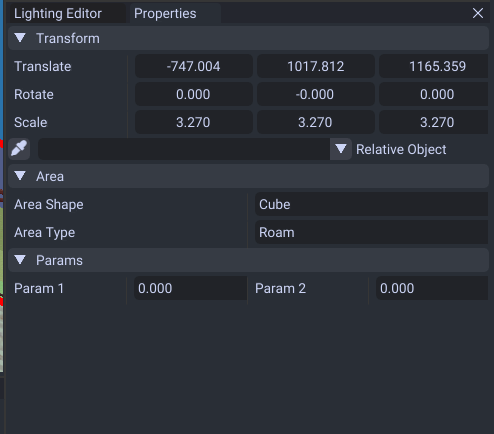

Areas
These are boxes which can control replay cameras, audio, map object movement, and other things.
Editing Areas
You can switch to the area editor under the editor list.

Shortcuts
| Shortcuts | Effect |
|---|---|
| Alt + Mouse Down | Adds area. |
| Del | Delete |
| Q | Also can add area. |
| Ctrl + D | Duplicate |
| Ctrl + C | Copy |
| Ctrl + V | Paste |
| 1 | Activates movement tool |
| 2 | Activates rotation tool |
| 3 | Activates scale tool |
| G | Move |
| R | Rotate |
| T | Scale |
| X | Lock X Axis |
| Y | Lock Y Axis |
| Z | Lock Z Axis |
| B | Selection Box |
If you have the Drop Objects to Collision option toggled up top, this will spawn it above the nearest collision.
Toolbar
From left to right the menus control: - Adds object (near camera) - Removes object - Copy selected - Paste
Visuals
Areas can be shown as a filled color with this option in the tools window. This may help see where the area ends easier.
Object Moving/Roaming Areas
You can have objects move around (if the map object supports it).
First toggle both map objects and areas so you can see them in the viewer.

Next click on your map object then select the Relative Area

Now this object can move around inside the box. Keep in mind this is limited to a few objects used by the game like PcBalloon.
Camera Areas

These determine what replay cameras to "record" player movement when the player is inside. You can add more than one camera to link up multiple cameras to switch between.
Effect Areas

These have their own editor for adding. Configuring what effect to display is done per course from another file and cannot be edited in tool atm.
Clip Areas
These are for unloading parts of the track.
First you add one.

Next add a clip. A clip represents a group of areas to unload at once.
Select the added clip then add your areas.

This clip can unload sub meshes from the course model and also map objects.
Note course model unloading is not supported by the current model importer atm but will be in a later update

Now that is created for it to be used in game we need to assign the clip number to a lap path point. When the player goes inside the lap point it unloads that region in game to save on performance.
Properties
When you select an area, they will have properties inside the properties window.

- Area Shape Controls the shape (cube or cylinder). Cylinder types not displayed atm.
- Area Type Controls the type (Replay camera, audio, pull, roaming, etc)
- Prm1 Unknown. Depends on what type is used.
- Prm2 Unknown. Depends on what type is used.